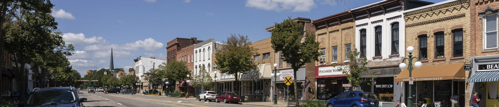
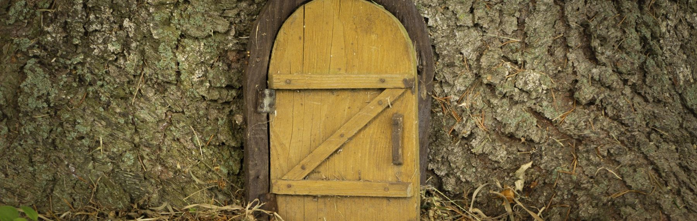
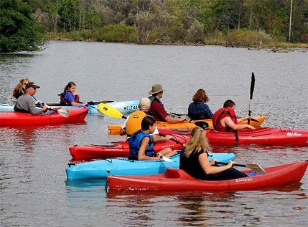
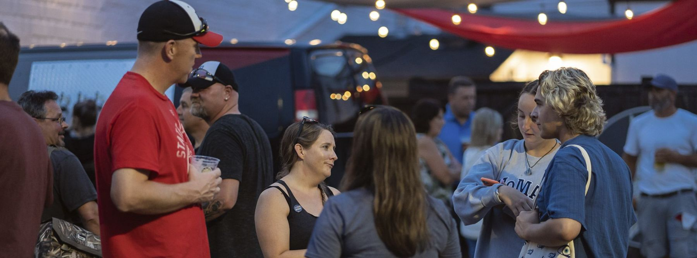
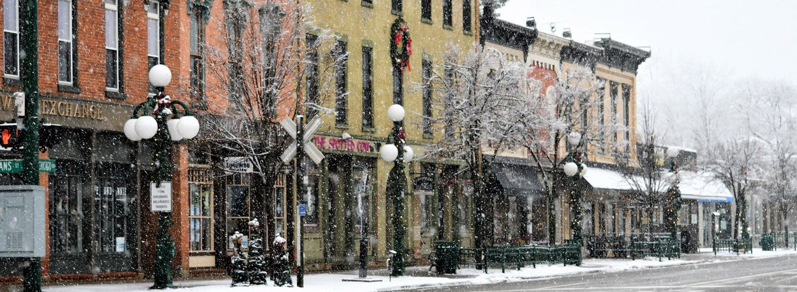
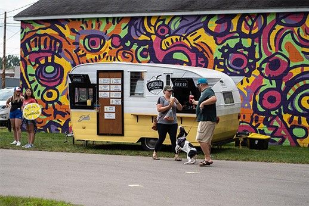
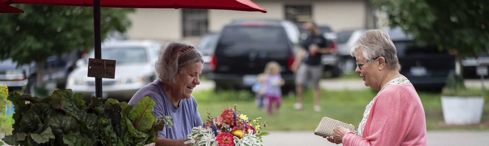
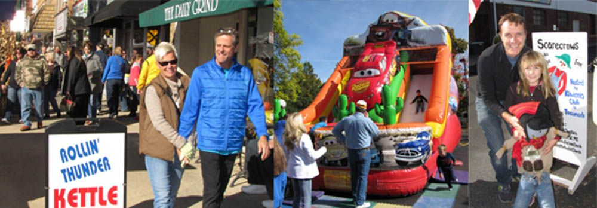
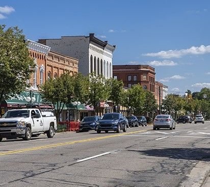

Historic Downtown Tecumseh, Michigan
Come. Explore.Experience. Connect.
Locally owned shops, a sculpture trail you can walk in an afternoon, a Saturday market, and something on the calendar nearly every week.
Coming up downtown Full calendar
Events & activities
Mark your calendar
Start here
What brings you downtown?
Explore downtown
More than a place to shop
 Art Trail Tecumseh23 sculptures and murals, free, self-guided
Art Trail Tecumseh23 sculptures and murals, free, self-guided
 Farmers MarketSaturdays at The Market on Evans
Farmers MarketSaturdays at The Market on Evans

Fairy Door Adventure22 doors to find around town Music in the ParkFree summer concerts in Adams Park
Music in the ParkFree summer concerts in Adams Park

Trails & the River RaisinWalking paths, biking and paddling Arts & CultureTecumseh Center for the Arts and more
Social DistrictSip and stroll within the commons area
Winter FunSnowshoe rentals and the Ice Sculpture FestivalShop & dine
104 downtown businesses, one search

Art Trail Tecumseh
A free outdoor gallery, on your own time
New sculptures are installed every spring. Walk the 2026 trail with the interactive map, and if you see something you can't live without, most of the art is for sale.
- 23 stops across downtown, the library, the Center for the Arts and the high school
- Tap any stop for the artist, location and price
- Printable brochure for the glovebox
Tecumseh's Farmers Market
Checking the scheduleSaturday mornings at The Market on Evans
Local produce, farm fresh eggs, handmade crafts, cakes and pies, a block and a half north of Chicago Boulevard.
- 213 N. Evans Street, Saturdays 9:00 am to 1:00 pm
- May 16 through October 24, 2026
- Barrier free parking across the street at Logan and Evans

This season
32nd Annual Appleumpkin Festival
October 10 and 11. Saturday 9am to 6pm, Sunday 10am to 5pm. Midway rides for the kids and the whole downtown turned out for fall.

Your DDA at work
What we're building downtown
A new downtown website
Proposals are due October 19, 2026. Award is anticipated November 12, with launch planned for May 2027.
Art Trail Tecumseh 2026–2027
This year's sculpture exhibit was installed in spring 2026, funded through the DDA, the Sage Foundation and the Michigan Arts and Culture Council.
Downtown Streetscape Master Plan
Implementation updates will be posted here by DDA staff as the plan moves forward.
Plan your visit
An easy day trip
Downtown Tecumseh is in Lenawee County, 25 miles southwest of Ann Arbor and 35 miles northwest of Toledo.
